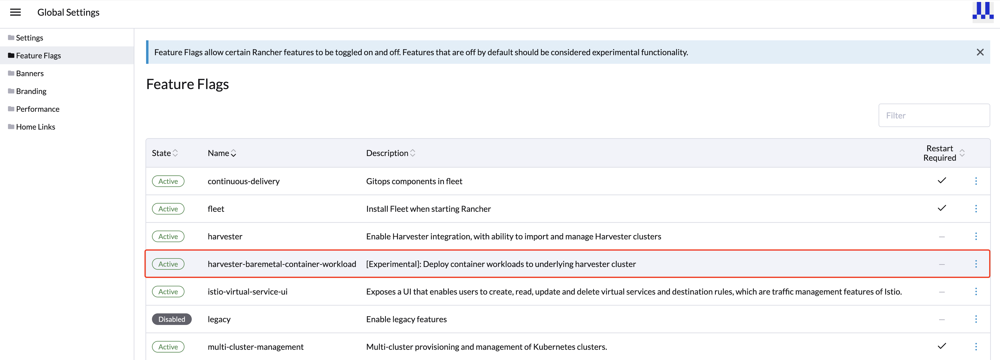
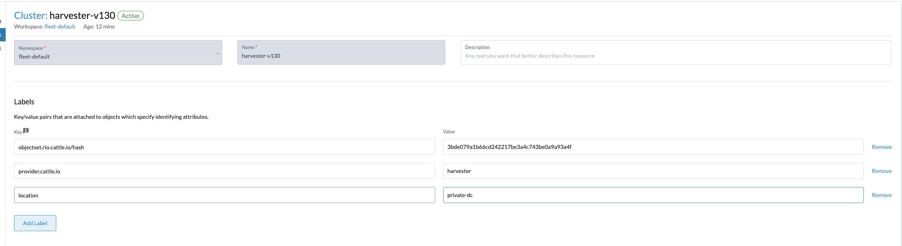
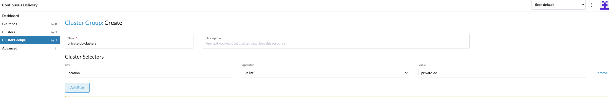

SUSE Rancher Prime 集成

部署 Rancher 服务器
要将 Rancher 与 SUSE Virtualization 一起使用，您必须在单独的服务器上安装 Rancher。如果您想尝试集成功能，可以在 SUSE Virtualization 中创建一个虚拟机，并按照 Helm CLI 快速入门 安装 Rancher 服务器。
对于生产环境，您可以 在各种云服务提供商中部署 Rancher 并配置 Kubernetes 集群。
如果您想在本地或与文档中未列出的提供商一起运行 Rancher，您可以 安装 Helm CLI，然后使用 Helm 安装 Rancher。
|
请勿在生产环境中使用 Docker 安装 Rancher。否则，您的环境可能会损坏，您的集群可能无法恢复。在 Docker 中安装 Rancher 仅应用于快速评估和测试目的。 |
虚拟化管理
使用 Rancher 的虚拟化管理功能，您可以导入和管理您的 SUSE Virtualization 集群。通过点击导入的集群之一，您可以轻松访问和管理一系列 SUSE Virtualization 集群资源，包括主机、虚拟机、镜像、卷等。此外，虚拟化管理功能利用了 Rancher 的现有能力，例如与各种认证提供商的认证和多租户支持。
有关深入的见解，请参考 虚拟化管理 页面。

使用 Harvester 节点驱动程序创建 Kubernetes 集群
您可以从 Rancher 启动一个 Kubernetes 集群，使用 Harvester 节点驱动程序。当 Rancher 将 Kubernetes 部署到这些节点时，请选择 RKE2。
在由节点驱动程序托管的节点池上安装 Kubernetes 的一个好处是，如果某个节点与集群失去连接，Rancher 可以自动创建另一个节点加入集群，以确保节点池的数量符合预期。
Harvester 节点驱动程序默认包含在 Rancher 中。有关更多信息，请参见 节点驱动程序。

裸机容器工作负载支持（实验性）
SUSE Virtualization 使您能够直接将容器工作负载部署和管理到底层 SUSE Virtualization 集群。通过此功能，您可以无缝结合虚拟机的强大功能与容器化的灵活性，从而实现更灵活和高效的基础设施设置。

本指南将引导您启用和使用此实验性功能，突出其能力和最佳实践。
要启用此新功能标志，请按照以下步骤操作：
-
单击汉堡菜单并选择 全局设置 选项卡。
-
单击 功能标志 并找到新的功能标志
harvester-baremetal-container-workload。 -
单击下拉菜单并选择 激活 以启用此功能。
-
如果功能状态更改为 激活，则表示功能已成功启用。

主要功能：
-
统一仪表板视图：启用该功能后，您可以像使用其他标准 Kubernetes 集群一样，探索 SUSE Virtualization 集群的仪表板视图。这个统一的体验简化了从单一用户友好的界面管理和监控虚拟机及容器工作负载的过程。
-
部署自定义工作负载:此功能允许您将自定义容器工作负载直接部署到裸机 SUSE Virtualization 集群。虽然此功能仍处于实验阶段，但它为优化您的基础设施带来了令人兴奋的可能性。然而，我们建议在不同的名称空间中部署容器和虚拟机工作负载，以确保清晰和分离。
|
SUSE® Rancher Prime: Continuous Delivery 支持（实验性）
您可以利用 SUSE® Rancher Prime: Continuous Delivery 来管理容器工作负载并使用基于 GitOps 的方法配置 SUSE Virtualization。
|
必须启用 Rancher 功能 |
-
在 Rancher 用户界面上，转到 ☰ → 持续交付。

-
（可选）在 集群 选项卡上，编辑 Fleet 集群配置以添加可用于分组 SUSE Virtualization 集群的标签。
在此示例中，添加了标签
location=private-dc。

-
（可选）在 集群组 选项卡上，创建一个集群组。
在此示例中，集群组
private-dc-clusters是通过与标签键/值对location=private-dc匹配的集群选择规则创建的。
-
在 Git 储存库 选项卡上，创建一个名为
harvester-config的 Git 储存库，该储存库指向 harvester-fleet-examples 储存库，分支定义为main。您必须定义以下路径：-
keypair -
vmimage -
vmnetwork -
cloudinit
-
-
单击 下一步，然后定义 Git 储存库目标。您可以选择所有集群、单个集群或一组集群。
在此示例中，使用名为`private-dc-clusters`的集群组。

-
单击*保存*。资源可能需要几秒钟才能下发到目标集群。